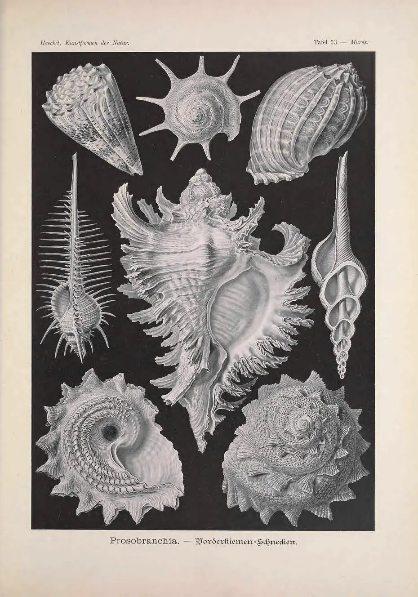

Prosobranchia (Kunstformen der Natur, plate 53)
Ernst Haeckel & Adolf Giltsch · 1899–1904 · Book plate (printing method not confirmed) · Smithsonian Libraries and Archives
Free to use
More than a thousand prints were made from Haeckel's sketches and watercolours over the course of his career. Many of the best of them were chosen for the hundred plates of this book and redrawn for printing by the lithographer Adolf Giltsch.